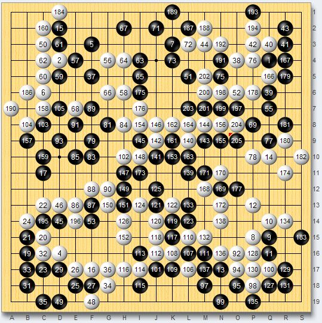

通缉令第一天：超级玛丽一败再败 保龄神童豪取二连胜
首页
棋来棋往
#1 通缉令第一天：超级玛丽一败再败 保龄神童豪取二连胜 作者：潇洒 发表时间：2009-4-2 22:25:54
自昨天通缉令告示出来了，中国棋迷一片沸腾，在弈城的每一个地方都在谈论着这个事情，甚至有的棋迷在论坛发帖强烈支持国手阻击韩流，同时也都在称赞心中的希望这个爱国棋迷，有骨气，今天我去了棋室下棋的时候，就连社会的许多棋迷也在议论着弈城的通缉令和韩国高手玛丽。
今天是通缉令第一天，中国热血棋迷都在等待着，然而，众人翘首以待的被通缉的韩国18名9段好象约好了似的，一直不出现，是胆怯还是故意就不得而知了。就在大家疑惑中，下午4点左右玛丽出现了，不亏为最近的红人，代表韩国棋手来接受了中国棋手挑战，玛丽的出现也引起了棋迷的骚动，身临棋境9段也第一个冲了上去，邀战了玛丽。这一局，身临棋境执黑以最近非常流行的布局对抗玛丽，玛丽很沉着应战，在中盘取得了一定的优势，却因为网络问题，超时了，这个成绩因而此不能算上了。玛丽自从3月底从被报道后一直没下，今天来了却因为网络问题败了，玛丽下线了不知道会不会再出现？
在等待了5小时后，玛丽再次出现，而在这5个小时中居然没有一个被通缉的韩国9段出现，估计部分目前是不敢下了，或者是换马甲在观望，是玛丽还是玛丽。一出现就邀请了中国强9花都开好了，这个玛丽真有个性，他的设置一直是拒绝邀请，看来他是看名声大的才下啊！气得冤枉等９段干着急啊．
也许下午那局使玛丽很郁闷，对花开一战，玛丽以迷你中国流开局，而花开多少显得不自信，这一局有1000多棋迷观战，押分总额将近200亿，虽然有许多棋迷为花开加油，如秀罪犯(16级)说“ 花开要淡定”，舞会面具(9段)高喊：“ 活捉玛利，活捉玛利，活捉玛利！”然而，花开却未能发挥水平，通缉令第一战花开战败。获胜后的玛丽没有离开，呆在大厅继续等待。
这个时候，通缉令中的showmethe，bring(P),chaos(P),陆续来了，showmethe依然相中了花开，bring(P)邀请了保龄神童，这两对在撕杀的时候，绿肥红瘦来了，玛丽约战了他，绿肥红瘦欣然应战，这一局很有意思，绿肥红瘦也用迷你中国流布局来对付玛丽，俗话说：“出来混的，有些债迟早要还”，玛丽在右下的打入中有中刀嫌疑，大龙死活出现问题，黑运用劫争，使白处处难受，玛丽这一局大失水准，输得很郁闷，绿肥红瘦终于拿下最头疼的头号通缉对象，相信中国的国手们一定深受鼓舞！
而花开却再次输给了showmethe，保龄神童屠龙胜了bring(P)。而奇怪的是来了许久的chaos(P)却一直在观战！
原以为战败下线的玛丽不会来了，谁知道10分钟玛丽又来，玛丽的目标瞄准了保龄神童，刚胜了bring(P)的保龄神童士气正旺，二强相遇，勇者胜，在缠斗中，神童大发神威，屠龙胜了玛丽，玛丽今天真不走运，不知道他以后还会不会来？玛丽下去了，伤心的离开了，此时已经是凌晨0点30分了，bienaol（P）来了，难道玛丽就是bienaol（P）吗？
中国棋手白天一直等着也等不到通缉犯，我等棋迷都以为因为通缉韩国棋手不敢上线，后来才知道因为昨晚有一场足球赛，南韩北韩比的，韩国人都很重视这场比赛，所以棋手都去看球去了才没上线，估计今天一定会热闹的!相信精彩的战斗就会来了.
通缉令第一天，中国三胜二败，保龄神童二连胜！
具体成绩：
绿肥红瘦胜玛丽
保龄神童胜bring(P)，玛丽
花都开好了输玛丽，输showmethe！［ 孤竹 于 2009-4-3 22:15:56 时奖励此帖[金币加 20 威望加1］
#2 Re:通缉令第一天：超级玛丽一败再败 保龄神童豪取二连胜 作者：下棋思思 发表时间：2009-4-3 7:38:08
潇洒，怎么没把精彩对局截个图片过来让大家分享评论一下。
#3 Re:通缉令第一天：超级玛丽一败再败 保龄神童豪取二连胜 作者：失落刀 发表时间：2009-4-3 9:47:46
这一局有1000多棋迷观战，押分总额将近200亿，
#4 Re:通缉令第一天：超级玛丽一败再败 保龄神童豪取二连胜 作者：潇洒 发表时间：2009-4-3 14:00:28
绿肥红瘦 黑胜 玛丽
#5 Re:通缉令第一天：超级玛丽一败再败 保龄神童豪取二连胜 作者：潇洒 发表时间：2009-4-3 14:04:43
玛丽 黑胜 花都开好了

#6 Re:通缉令第一天：超级玛丽一败再败 保龄神童豪取二连胜 作者：潇洒 发表时间：2009-4-3 14:07:18
showmethe 黑胜 花都开好了
#7 Re:通缉令第一天：超级玛丽一败再败 保龄神童豪取二连胜 作者：潇洒 发表时间：2009-4-3 14:11:53
保龄神童 白胜 bring(P)
#8 Re:通缉令第一天：超级玛丽一败再败 保龄神童豪取二连胜 作者：潇洒 发表时间：2009-4-3 14:15:40
保龄神童 黑胜 玛丽

#9 Re:通缉令第一天：超级玛丽一败再败 保龄神童豪取二连胜 作者：裁决殿雪月 发表时间：2009-4-3 17:37:42
花都开好了 这人我在弈城见过一次 可惜我对围棋一知半解
#10 Re:通缉令第一天：超级玛丽一败再败 保龄神童豪取二连胜 作者：雅匪 发表时间：2009-4-4 19:05:12
爱，精彩的故事总是这么快就结束了...